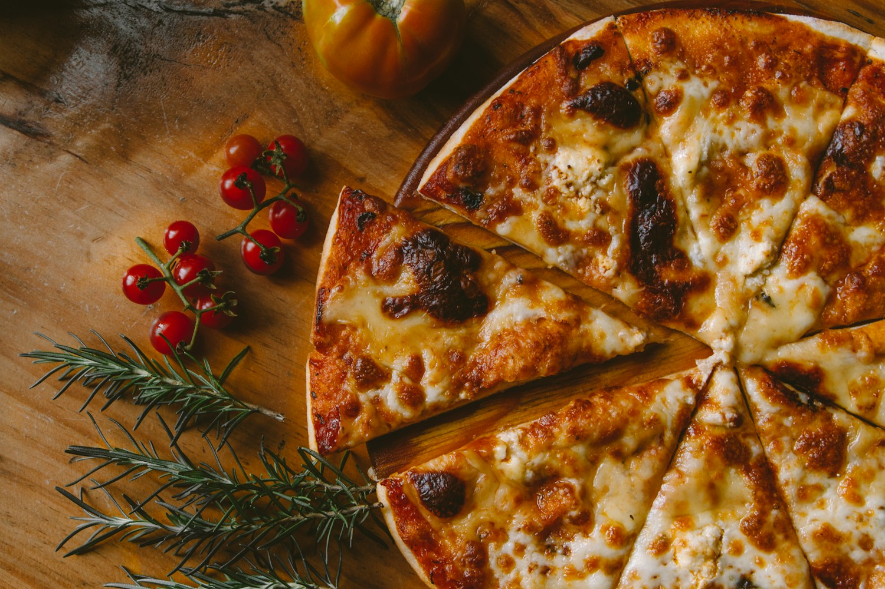

Albo wpadnij solo.
Randka, spotkanie po pracy, wieczór bez gotowania. Każdy powód jest wystarczająco dobry.
Gorąca pizza. Długie rozmowy. Ostatni kawałek,
o który zawsze ktoś zapyta: „na pewno nie chcesz?”

„Pizza nie musi być idealnie okrągła.
Ma być tak dobra, żeby przy stole
na chwilę zrobiło się cicho.”
Marco to serce naszej opowieści. Kucharz, który lubi proste składniki, głośne rozmowy i moment, gdy z pieca wychodzi coś naprawdę dobrego.
W Ciao Bella chodzi o ten sam pomysł: bez nadęcia, bez pośpiechu przy stole i bez oszczędzania na smaku.
Ci vediamo, Marco.Marco Bellini jest fikcyjną postacią stworzoną na potrzeby projektu. Zdjęcie stockowe przedstawia modela.Randka, spotkanie po pracy, wieczór bez gotowania. Każdy powód jest wystarczająco dobry.
Zacznij od czegoś małego. Potem pizza. A później „tylko jedna łyżeczka” deseru.
Odłóż telefon, podaj dalej ostatni kawałek i opowiedz historię do końca.
Trochę gwaru, trochę włoskiego luzu.
Dużo miejsca na Wasze historie.
Ty przyprowadź swoich ludzi.
My zadbamy o resztę.
ul. Pomidorowa 8
00-000 Warszawa
Wt–czw · 13:00–22:00
Pt–sob · 13:00–23:00
Niedziela · 13:00–21:00
Poniedziałek · odpoczywamy
ciao@ciaobella.example
000 000 000